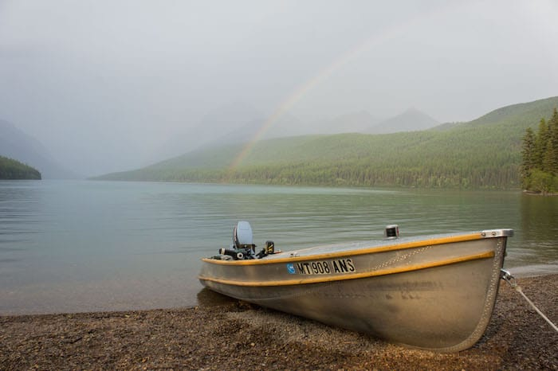
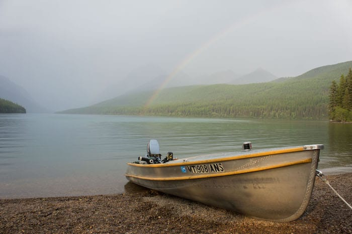
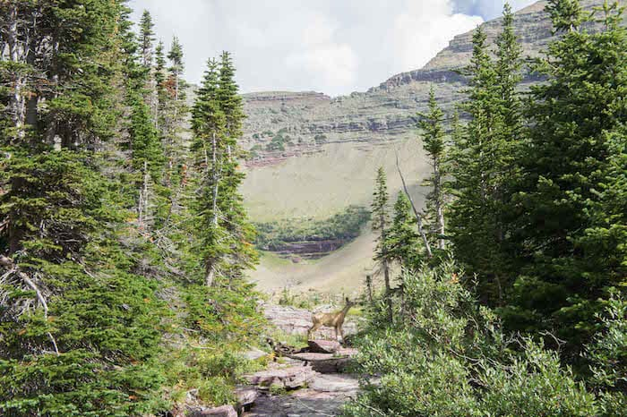
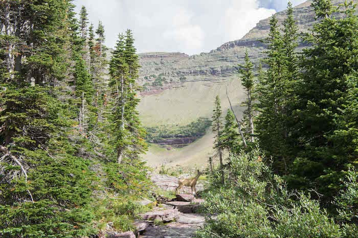
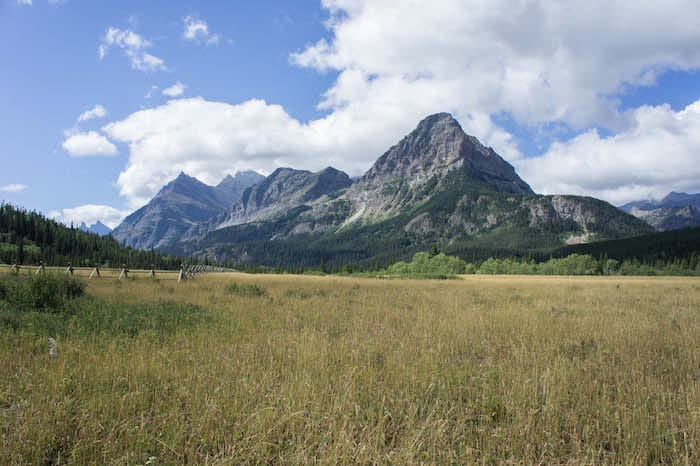
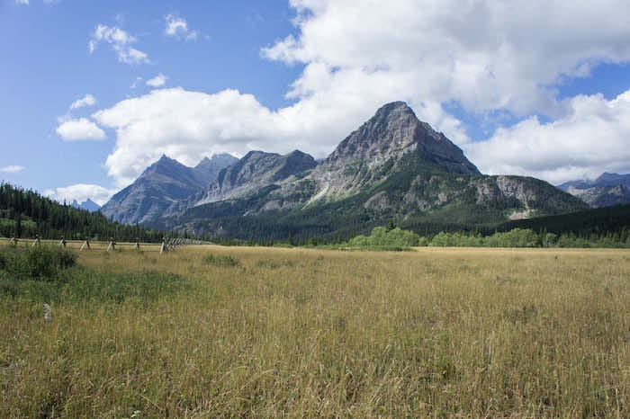

At the end of summer 2015, I found myself having just moved to Nicaragua. A work opportunity to head the office we had down there had come to fruition and I was to finally do the "living abroad" thing. I can't say that if I were to have picked a place to do so that it would have been Nicaragua, but I'm glad it was Nicaragua indeed.
First, we have one of the areas closer to where I was living, and a common feature of the Nicaraguan landscape. Volcan Masaya.
Volcan Masaya
Boom!
At the end of summer 2015, I found myself having just moved to Nicaragua. A work opportunity to head the office we had down there had come to fruition and I was to finally do the "living abroad" thing. I can't say that if I were to have picked a place to do so that it would have been Nicaragua, but I'm glad it was Nicaragua indeed.
About eight miles in, we found a place to camp. We set things up and went to refill our water bottles. As the sun set, and while fighting off the mosquitos, we could see part of the battle ahead. Kings peak is the middle peak hiding behind that ridge in the above right photo.
The next morning we got up and set off just a little behind schedule, but still before most others.
Granada
The Oldest Colonial Town in the Americas
Next, we drove up into Wyoming along hwy 89. The route is a bit wiggly going back into Utah for a bit, then back into Wyoming, then clipping Idaho, then black into Wyoming until finally arriving in Jackson, Wyoming where we saw the Tetons.
Here Spencer took some time off to recover a little and wrangle some stuff having to do with uni, and Jon and I hiked the Paintbrush Divide Loop which consists of 19 miles and 4,400ft of elivation gain from 6,200 to 10,700ft. A long day indeed.


This loop has become somewhat of an annual pilgrimage for me for a number of reasons, and I had already come earlier in June to claim it when my ice axe and knowing how to walk were still very necessary due to remaining snow and ice coverage on steep slopes. Adding to that kind of fun, the following photos may shed some light as to why I hold this place as particularly special.
San Juan Del Sur
Gringotopia
Where back in Wyoming we saw the clearest, hazeless skies I ever did see there, in Montana we arrived looking at almost everything through a smoky lens. As it turned out, there were a number of wildfires in the park closing significant portions of it, and the states of Washington and Oregon had just started being virtually completely on fire.
 

We spent a couple nights at Bowman Lake before heading out into the backcountry for five days.
I walked around the lake a bit and at some point took the horn fuse out of my car, since the bumpy roads caused it to start sounding on its own whenever I'd turn sharply,
Spencer stacked rocks making extreme structures, and Jon slept for a good part of the morning to rest up for what was ahead
- Five days in the backcountry of glacier national park -
such an itinerary which was quite hard to come by due to the fire closures,
but this came at a price to make it work, loads of miles skipping over sequential camping zones and lots of elevation gains and losses.
Yet with the weather cleared up like this. It was worth it.


The next morning we woke to clearing skies, and for the next few days we saw some of the most impressive views of the trip without any smoke to speak of.


 



 


My camera batteries died with the attempt at the above star photo. We had another 14.5 mile hike over a pass and then an 8 mile hike back to the car the following morning.
And with many altitude and much miles behind us, we were done with the trip. I drove the BMW back to Utah completely obedient to
posted speed limits, especially through the virtually unpatrolled native american reservation land in Montana, and after going through some
apocalypticly smoky skies through Idaho, we were back in Utah for a couple days until I'd follow the guys in my car moving back to California from Utah before heading
to a masters program in Spain.
Thus concluded "the Anaconda Opportunity"
(Inspired by the names of two adjacent towns we saw on one sign in western Montana).